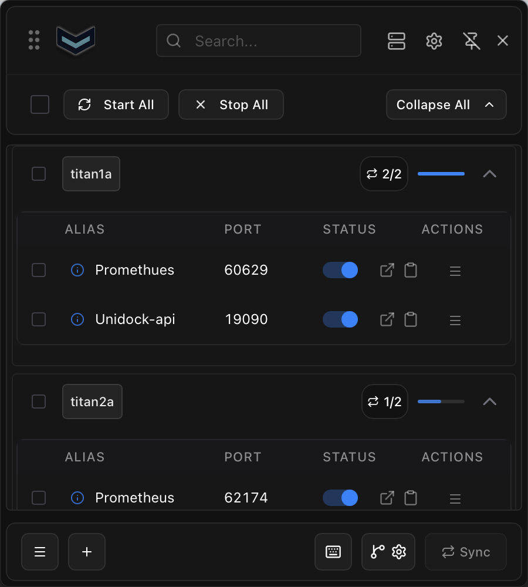
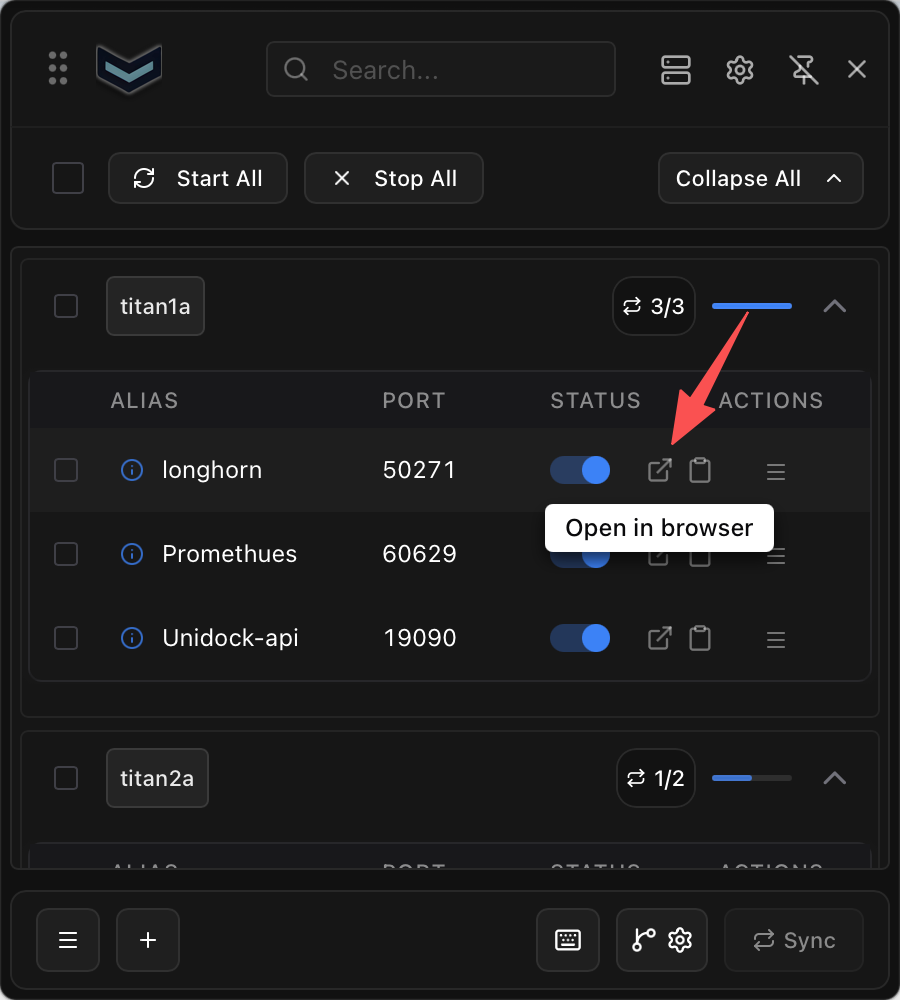
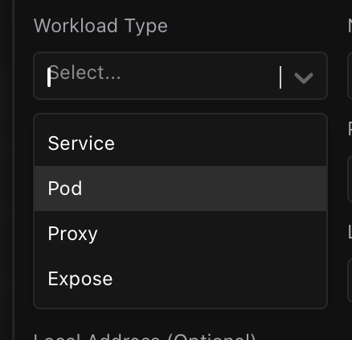

最近在折腾多个 Kubernetes 环境时，有个小问题一直挺烦的。
有些服务只给集群内部用，平时想看个页面、调个接口，最直接的办法就是 kubectl port-forward：
1 | kubectl -n monitoring port-forward svc/prometheus 9090:9090 |
一两个服务当然没什么。可环境一多，情况就开始变得有点乱：这个服务在哪个 kubeconfig 里、哪个 namespace、要转到本地哪个端口，隔几天不用基本又要重新翻一遍。
以前我一般是临时写个 HTTPRoute，或者开个终端跑 kubectl port-forward。前者对“我就进去看一眼”的需求有点重，后者则是命令越攒越多，过两天自己都不太记得当时怎么转的。
后来发现了 kftray，用下来感觉还挺顺手，就记录一下。
它的项目在这里：hcavarsan/kftray。
下载时会看到 kftray 和 kftui 两个工具：前者是带界面的版本，平时就放在系统菜单栏里；后者是终端版。我自己目前只用了 kftray，所以这篇也只聊它。
它解决的其实就是“别让我再记命令”
kftray 的思路很简单：把平时要用的 port-forward 保存成配置。
这样以后不用每次都手敲一大串命令，也不用去翻 Shell 历史。打开菜单栏，找到对应的服务，点一下就行。多个 kubeconfig、多个集群的配置也可以放在一起管理。
先放一张整体界面的图：

我觉得它特别适合这种场景：手里有好几个环境，但每天真正要访问的也就是那几个内部服务，比如 Grafana、Prometheus、内部 API 或管理后台。
配置一次，后面就省事了
新建配置时，填的内容其实就是平时 kubectl port-forward 命令里那些参数：先选 kubeconfig 和 context，再选 namespace、目标服务，以及本地和远端端口。
比较省心的是，kubeconfig 选好后，后面的 namespace 和目标服务会在表单里自动加载出来，直接选就行，不用自己再去记名字。

本地端口也不用太纠结。不填的话，kftray 会自动生成一个可用端口。现在界面里支持直接点击打开页面，大多数时候连 localhost:xxxx 都不用记，自然也没必要刻意给每个服务规划端口了。
需要的时候点一下就能打开
配置保存好之后，平时就不用管它了。想访问哪个服务，直接在菜单栏里把它打开。
对网页服务来说，我最喜欢的是它可以直接点开本地地址。以前还得记住转发的是 localhost:xxxx，现在转发起来之后直接点一下就进去了。

这种体验说不上多复杂，但日常用起来确实舒服。尤其是临时想看一下 Grafana、Prometheus，或者调个只在集群内暴露的接口时，不用再开终端、找命令、复制端口，节奏会顺很多。
不只可以转发 Service
配置界面里还可以选不同的 workload 类型：

我自己大部分时候还是直接选 Service，毕竟很多服务本来就是通过 Service 暴露的。不过有些场景需要直接找工作负载时，也可以在这里选对应类型。
最后
kftray 没有取代 kubectl port-forward，它本质上还是在帮你把那些参数和操作收起来。权限也还是用你本机 kubeconfig 里的那套，没权限的服务当然还是连不上。
但对我来说，这就够了。平时把常用的几个内部服务配好，之后需要访问时从菜单栏点一下，不用再记 context、namespace 和端口。
如果你也经常在“上次那条 port-forward 命令是什么来着”和“我就临时看一眼服务”之间来回切换，可以试一下它。